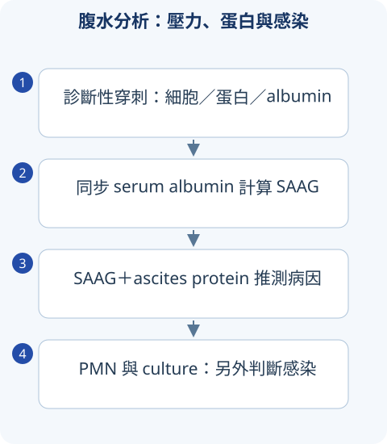

判讀圖解

詳讀 01肝生化不是所有都叫肝功能
AST／ALT 反映細胞損傷，ALP／GGT 偏膽汁淤積，bilirubin 是代謝／排洩，albumin／INR 更関聯合成功能。AST 也來自肌肉；ALP 可來自骨，GGT 可協助判斷肝膽來源。指數高低與肝臟剩餘功能不完全平行。
R ratio＝(ALT/ULN)/(ALP/ULN)，≥5 hepatocellular，≤2 cholestatic，2–5 mixed；用於損傷型態且注意時點。低 albumin 也可能營養、發炎或腎丟失；INR 高也可抗凝／vitamin K 缺乏，不能單一數字診斷肝衰竭。
詳讀 02黃疸與病毒血清學
Indirect bilirubin 為主考溶血、Gilbert、conjugation 問題；direct 為主考膽道或肝細胞排洩異常。Indirect 不水溶，通常不造成尿 bilirubin；dark urine 需區分 bilirubin、血與肌紅蛋白。
| HBV 檢驗組合 | 解讀 | 考點 |
|---|---|---|
| HBsAg+、anti-HBc IgM+ | 偏急性感染，但部分 flare 也可 IgM+ | 須看病程、HBV DNA，不憑單一標記絕對判 |
| HBsAg+ 超過6個月 | 支援慢性 HBV | ALT、DNA 與 fibrosis 決定活動與治療 |
| HBsAg−、anti-HBs+、anti-HBc− | 疫苗免疫 | 疫苗不會產生 anti-HBc |
| HBsAg−、anti-HBs+、anti-HBc+ | 既往感染恢復 | 免疫抑制仍需評估再活化風險 |
| Isolated anti-HBc | 視窗期、遠期感染、偽陽性等 | 看 IgM、DNA 與宿主，不只有一個答案 |
寬表格可左右捲動
Anti-HCV 陽性表示暴露線索，HCV RNA 判活動感染；治癒後 antibody 仍可陽性。HBeAg／anti-HBe 不是絕對複製開關，precore variant 可 HBeAg 陰性但 DNA 高。
肝炎治療：各種病因不同
急性 HAV 多支援治療；慢性 HBV 有 entecavir、tenofovir 等適合抗病毒，HCV 有 DAA 可獲得 virologic cure。AIH 常 steroid 加適當免疫抑制，PBC 有特定膽汁酸等治療，DILI 需停止致病藥並評估嚴重度。因此「肝炎只能支援性療法」不正確；所謂養肝藥不能代替病因治療。
詳讀 03肝硬化：從門脈高壓到器官失代償
纖維化與血管阻力上升造成 portal hypertension；腹水、variceal bleeding、encephalopathy 等代表失代償。Child–Pugh 看 bilirubin、albumin、INR、ascites、encephalopathy；MELD 系列版本與移植配置不同，不能互用舊公式。
腹水與 SBP
新出現腹水或住院失代償時評估 diagnostic paracentesis。SAAG＝serum albumin−ascites albumin，≥1.1 g/dL 支援 portal hypertension，非「癌／非癌」分類。高 SAAG 合併高蛋白常考心因性；低 SAAG 考癌、TB、胰源等。
Ascites PMN ≥250/μL 支援 SBP，培養陰性也可能；多菌、糖低、LDH／蛋白異常與腹部病灶需想 secondary peritonitis。大容量放液後白蛋白依適用情況補充，常見 >5 L 按每移除一升約6–8 g；這是特定預防迴圈失衡，不是 albumin 低人人補。
肝性腦病與 HRS
Encephalopathy 先找 GI bleeding、感染、便秘、脫水、藥物與電解質。Lactulose 調到適當軟便，rifaximin 在適用預防／追加；ammonia 不能單獨診斷、分級或排除所有意識問題。避免長期不適當限蛋白，注意營養／肌少症。
HRS-AKI 是肝硬化背景中腎灌流與迴圈失衡的特定症候，先查容量、感染、藥物、阻塞與結構性腎病；不能說肝硬化 Cr 高就 HRS。新共識不主張所有人機械式先48小時 albumin challenge，應按容量和診斷評估；vasoconstrictor、albumin 與 transplant 有適用條件。
詳讀 04膽道與胰臟：阻塞、感染、炎症
| 疾病 | 辨識線索 | 處置主軸 |
|---|---|---|
| Biliary colic | 餐後 episodic RUQ pain，無明顯持續炎症 | 膽石與症狀評估 |
| Acute cholecystitis | 持續 RUQ pain、Murphy、炎症與影像 | 抗菌、膽囊介入／手術評估 |
| Acute cholangitis | 膽道感染＋阻塞，Charcot 為發熱痛黃疸 | 抗菌及適時 biliary drainage；三聯不一定齊全 |
| Acute pancreatitis | 典型上腹痛、enzyme 或影像滿足2/3 | 病因、嚴重度、補液與營養；不常規預防性抗菌 |
寬表格可左右捲動
Pancreatitis 的 enzyme 通常以 lipase／amylase >3×ULN 為條件之一；程度不直接等於 severe。Persisting organ failure >48h 是 severe 的重要核心。早期依耐受開始口服／腸道營養，補液需重評灌流與過量風險；膽石胰炎合併 cholangitis 改變 ERCP 需求。
詳讀 05HCC 與 transplant criteria
高風險肝病的 surveillance 與已發現腫塊後的診斷不同；多期增強 CT／MRI 的 arterial enhancement 與 washout 等特徵需放在適用人群與分類標準下。AFP 正常不能排 HCC，高也不自動確診。
Milan：單顆 ≤5 cm，或最多3顆且各 ≤3 cm，無 macrovascular invasion／extrahepatic spread。UCSF 擴大標準常考單顆 ≤6.5 cm，或最多3顆、最大 ≤4.5 cm、總直徑 ≤8 cm，同樣需無適當排除條件。BCLC 結合腫瘤負荷、肝功能與 performance status，切除／消融／移植／locoregional／systemic 不能只看尺寸。
大量腹水且全身水腫，是否代表腎灌流很好，不需管 AKI？
不是。肝硬化可總水量高但有效動脈迴圈不足；需同時看血壓、感染、用藥、尿量與腎病證據，不能從外觀水腫推灌流。
比較表速覽
讀完上方詳解後，用以下表格複習診斷差異與治療重點。
速覽｜1｜肝生化與黃疸
損傷指標、排泄與合成功能不同，必須整合。
| 線索 | 鑑別 | 注意 |
|---|---|---|
| Indirect bilirubin 為主 | hemolysis／conjugation 問題 | CBC、reticulocyte、LDH／haptoglobin 與病史。 |
| Direct bilirubin／ALP 為主 | cholestasis／obstruction | 超音波看膽道，依情境進一步影像。 |
| AST／ALT 為主 | 病毒、藥物、缺血、代謝等 | AST 可肌肉來源；R-value 用 ULN 校正。 |
| INR／意識惡化 | synthetic dysfunction／ALF 警訊 | 酵素下降不能單獨保證恢復。 |
寬表格可左右捲動
速覽｜2｜HBV serology：從感染與免疫判讀
僅列典型組合；isolated anti-HBc 等特殊結果需再評估。
| HBsAg | anti-HBs | anti-HBc | 典型意義 |
|---|---|---|---|
| − | − | − | 未感染／未建立可測免疫。 |
| − | ＋ | − | 疫苗免疫。 |
| − | ＋ | ＋ | 既往感染後恢復。 |
| ＋ | − | ＋ | 現有感染；以病程、IgM／DNA 等區分。 |
寬表格可左右捲動
HBeAg 陰性不等於無病毒複製；HCV antibody 陽性要用 RNA 確認現有感染。HAV／HEV 以傳播、急性感染與宿主情境記。
速覽｜3｜腹水、肝硬化與 HCC
SAAG 反映門脈壓關係，不是單純 transudate／exudate 同義詞。
| 概念 | 門檻／線索 | 重點 |
|---|---|---|
| SAAG | serum albumin−ascites albumin；≥1.1 g/dL | 支持 portal hypertension；配合 ascites protein。 |
| SBP | ascites PMN ≥250/μL | 依臨牀立即抗感染，採檢與 albumin 依適應。 |
| Secondary peritonitis | 多菌、異常 chemistry／不改善等 | 尋找可介入的腹內來源。 |
| HE | 排其他意識原因、找誘因 | 便祕、感染、出血、藥物等；ammonia 不單獨決定。 |
| HCC | risk-based surveillance 與 CT／MRI／pathology | AFP 不能單獨診斷；Milan／UCSF 見專頁。 |
寬表格可左右捲動
高 SAAG 可見心衰竭、肝硬化、Budd-Chiari 等；低 SAAG 不自動確診腫瘤。
速覽｜4｜膽道、胰臟與其他肝病
臨牀情境決定是否急需 drainage 或介入。
| 疾病 | 關鍵 |
|---|---|
| Cholangitis | 發燒／RUQ pain／黃疸是線索，但三聯症不一定齊全；評估 severity 與 drainage。 |
| Cholecystitis | 影像、局部症狀與全身發炎，外科／引流依病情。 |
| Acute pancreatitis | 典型 pain、enzyme ≥3×ULN、典型 imaging 三者取二；severity 看器官衰竭。 |
| Chronic pancreatitis | exocrine insufficiency、diabetes、pain 與 structural complication。 |
| PBC／PSC | cholestatic pattern；autoantibody／膽道影像與伴隨病。 |
| AIH、Wilson、hemochromatosis | 自體免疫、銅、鐵相關檢驗與臨牀整合。 |
| Drug／alcohol／metabolic liver disease | 暴露與時間軸；不能用 AST/ALT ratio 或脂肪肝影像單獨定病因。 |
寬表格可左右捲動
情境練習
Serum albumin 3.2、ascites albumin 1.6 g/dL，SAAG 多少？
來源與版本
書籍學習來源：《國考分科詳解—醫學（三）》2020 年版，第 2 冊〈腸胃・肝內・新陳代謝〉；本頁對應章節導讀位置為 PDF 第 83–182 頁（含封面，與書內印刷頁碼不同）。
依章節重寫比較與判讀重點；指引補充另列版本。圖解與情境練習為本站原創。核對日：2026/09/30。
詳細補充的來源範圍
上方「詳讀」為依原參考書主題架構重寫的基礎、臨床判讀與國考複習說明；原表格保留於速覽區。數值適用條件及舊題版本差異寫於對應小節；本頁未逐題收錄所有歷屆試題。
本輪擴充：2026/10/05。指引連結支援各自的更新主題；基礎病生理、藥物機轉與鑑別依書籍架構整理。